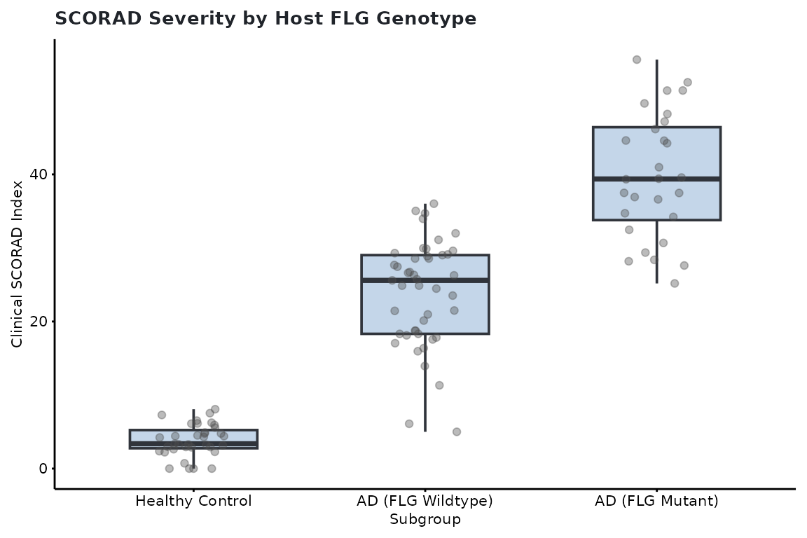
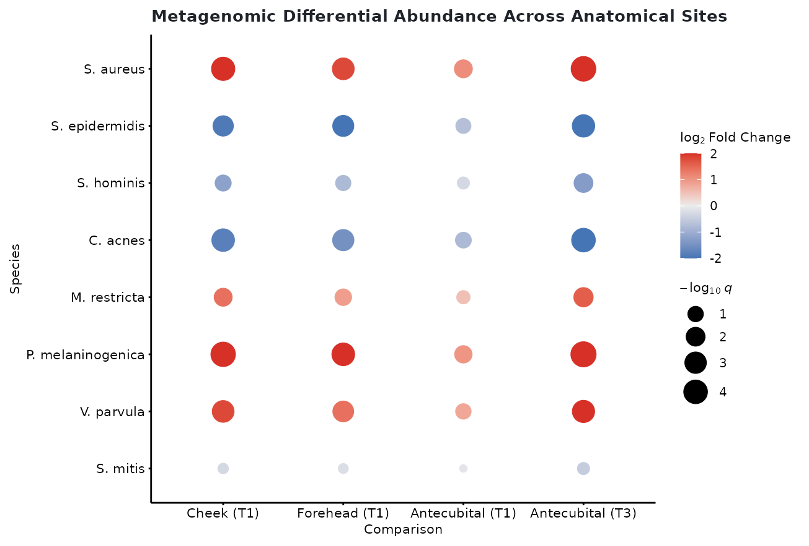
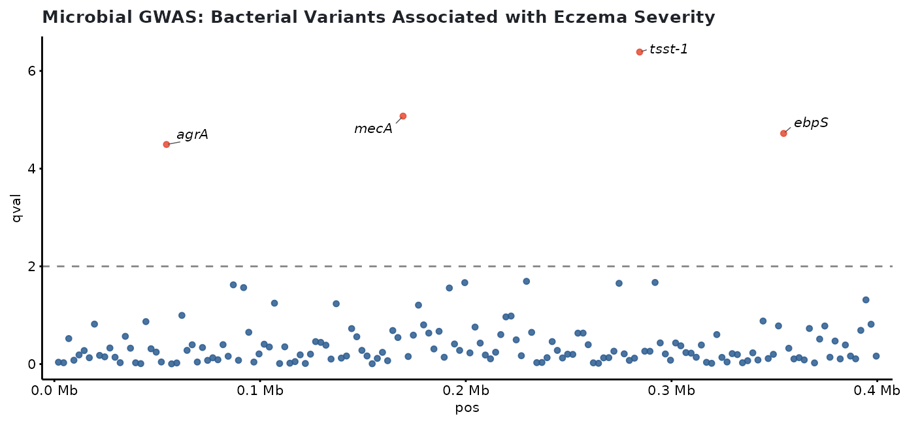
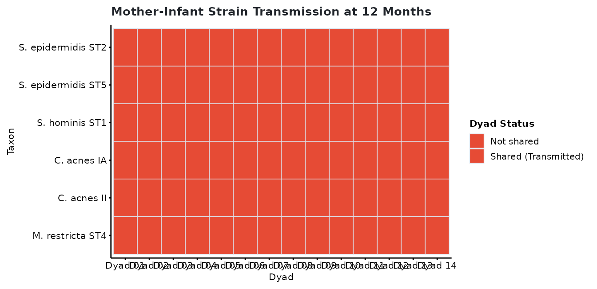

Microbial Metagenomics and mGWAS in Clinical Cohorts
Lucas VHH Tran
2026-10-31
Source:vignettes/microbiome-mgwas.Rmd
microbiome-mgwas.RmdOverview
Clinical microbiome and microbial genome-wide association studies
(mGWAS) link microbial community shifts, strain transmission, and
bacterial genetic variation to patient phenotypes. This workflow adapts
the clinical metagenomics archetypes from the VITALITY infant atopic
dermatitis trial (Shen et al.) into standardized
cliomicplot figure calls.
library(cliomicplot)
library(ggplot2)
clitheme("nature")1. Clinical Severity Stratification by Host Genetics
In cohort studies of atopic dermatitis, host genetic lesions (such as FLG loss-of-function variants) interact with microbial colonization. Here, clinical eczema severity (SCORAD index) is compared across disease subgroups with overlaid patient jitter and rank-sum tests:
set.seed(42)
cohort_df <- data.frame(
Subgroup = factor(rep(c("Healthy Control", "AD (FLG Wildtype)", "AD (FLG Mutant)"), c(35, 45, 28)),
levels = c("Healthy Control", "AD (FLG Wildtype)", "AD (FLG Mutant)")),
SCORAD = c(
pmax(0, rnorm(35, mean = 3.5, sd = 2.0)),
pmax(5, rnorm(45, mean = 24.2, sd = 7.5)),
pmax(12, rnorm(28, mean = 38.6, sd = 9.2))
)
)
cliplot(
SCORAD ~ Subgroup,
data = cohort_df,
type = "boxplot",
palette = "nature",
stat.test = "kruskal.test",
title = "SCORAD Severity by Host FLG Genotype",
ylab = "Clinical SCORAD Index"
)
2. Differential Abundance Bubble Matrix
Differential abundance tests report both directional effect size
(signed
)
and statistical significance
().
type_bubble_matrix() renders both across anatomical
sampling sites and study visits:
set.seed(42)
species <- c("S. aureus", "S. epidermidis", "S. hominis", "C. acnes",
"M. restricta", "P. melaninogenica", "V. parvula", "S. mitis")
comparisons <- c("Cheek (T1)", "Forehead (T1)", "Antecubital (T1)", "Antecubital (T3)")
da_df <- expand.grid(Species = species, Comparison = comparisons, stringsAsFactors = FALSE)
da_df$log2FC <- c(
2.3, -1.9, -1.2, -1.8, 1.4, 2.7, 1.8, -0.3,
1.8, -2.1, -0.8, -1.5, 0.9, 2.0, 1.4, -0.2,
1.1, -0.7, -0.3, -0.8, 0.5, 1.0, 0.8, -0.1,
2.8, -2.5, -1.3, -2.3, 1.6, 3.1, 2.3, -0.5
)
da_df$qval <- c(
1.5e-4, 2.8e-3, 0.07, 3.1e-4, 0.02, 3.8e-5, 7.5e-4, 0.65,
7.2e-4, 1.5e-3, 0.11, 1.2e-3, 0.05, 2.8e-4, 1.9e-3, 0.72,
0.02, 0.12, 0.42, 0.08, 0.28, 0.03, 0.10, 0.88,
2.8e-5, 3.9e-4, 0.01, 9.8e-5, 0.007, 1.5e-5, 4.8e-4, 0.42
)
cliplot(
Species ~ Comparison,
data = da_df,
type = type_bubble_matrix(size_col = "qval", fill_col = "log2FC", min_size = 2.0, max_size = 7.0),
title = "Metagenomic Differential Abundance Across Anatomical Sites"
)
3. Microbial GWAS (mGWAS) Manhattan Plot
Microbial GWAS maps bacterial genetic variation (single nucleotide
variants and indels) to continuous clinical outcomes such as SCORAD or
treatment response. type_manhattan() draws chromosome
positions with significance cutoff lines and labeled gene hits:
set.seed(42)
mgwas_df <- data.frame(
pos = seq(2000, 400000, by = 2500),
qval = runif(160, 0.02, 1.0),
gene = "",
stringsAsFactors = FALSE
)
# Insert significant microbial variant associations
hit_positions <- c(22, 68, 114, 142)
mgwas_df$qval[hit_positions] <- c(3.2e-5, 8.4e-6, 4.1e-7, 1.9e-5)
mgwas_df$gene[hit_positions] <- c("agrA", "mecA", "tsst-1", "ebpS")
cliplot(
qval ~ pos,
data = mgwas_df,
type = type_manhattan(
threshold = 0.01,
label_col = "gene",
point_size = 1.3,
xlab = "Staphylococcus aureus Genome Position (bp)",
ylab = expression(-log[10]~italic(q))
),
title = "Microbial GWAS: Bacterial Variants Associated with Eczema Severity"
)
4. Mother-Infant Dyad Strain Transmission Heatmap
Bacterial vertical transmission and strain persistence across early
infancy are evaluated across mother-infant dyads.
type_sharing_heatmap() summarizes binary dyad sharing
patterns across species:
set.seed(42)
dyads <- paste0("Dyad ", sprintf("%02d", 1:14))
taxa <- c("S. epidermidis ST2", "S. epidermidis ST5", "S. hominis ST1",
"C. acnes IA", "C. acnes II", "M. restricta ST4")
dyad_data <- expand.grid(Taxon = taxa, Dyad = dyads, stringsAsFactors = FALSE)
dyad_data$Transmission <- ifelse(
runif(nrow(dyad_data)) > 0.44, "Shared (Transmitted)", "Not shared"
)
cliplot(
Taxon ~ Dyad,
data = dyad_data,
type = type_sharing_heatmap(
status_col = "Transmission",
shared_color = "#E64B35",
unshared_color = "#EDF1F7",
legend_title = "Dyad Status"
),
title = "Mother-Infant Strain Transmission at 12 Months"
)